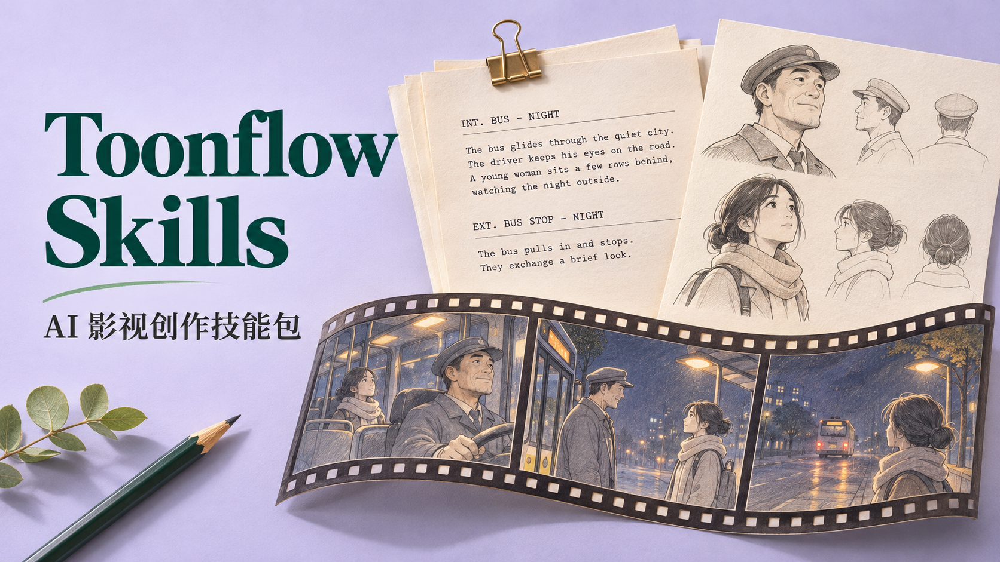

从创意到剧本和分镜
覆盖一句话剧本、小说改编、分集规划、角色/场景/道具设计、分镜与 Seedance 导演提示词，可按已有材料从相应阶段开始。

一套供 AI Agent 使用的影视创作技能包，包含 42 个 Skill，可辅助写剧本、设计角色、拆分镜头和整理视频生成提示词。
把故事、剧本、角色与场景设定、分镜和制作流程拆成可单独调用的技能，并附安装脚本、依赖清单和试跑示例。
切换查看《末班车》的三个场次、角色与场景设定，再选择安装分组，复制安装和调用示例。
演示读取仓库已公开的文字产物与分组清单，不在线调用模型或生成媒体。
覆盖一句话剧本、小说改编、分集规划、角色/场景/道具设计、分镜与 Seedance 导演提示词，可按已有材料从相应阶段开始。
提供文字创作、创作者、工具与媒体、工程维护及全量安装分组，42 个模块可独立安装或组合使用。
逐项记录文字任务、媒体生成、画布操作与工程任务的依赖，保留剧本、资产版本、候选素材与采用结果。
单独写剧本时可以直接调用对应 Skill；已有定稿剧本时，也可从资产设计、分镜或导演提示词开始。
安装包提供规则、资料和工具契约。图片、视频、音频与画布操作需要 Agent 连接相应执行工具与模型服务。
保留 Toonflow 上游提交映射与 MIT 署名；安装器按清单校验资源，默认不覆盖内容不同的同名技能。
42 个 Skill、安装器、依赖说明和代表性试跑示例已公开。安装器主要面向本地 Skill 目录；其他宿主和媒体工具的实测范围见仓库验证记录。
Agent Skills / Markdown / Python 3.9+ / Toonflow 工具契约 / MCP